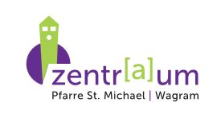
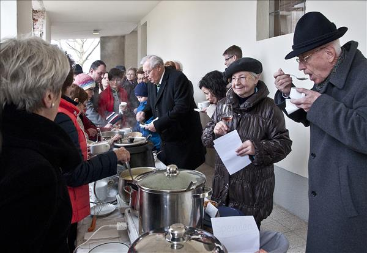
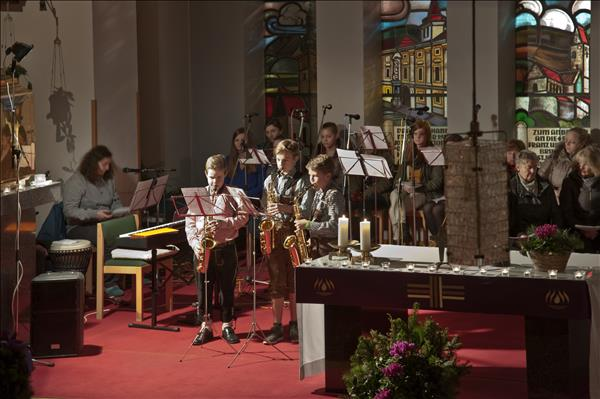
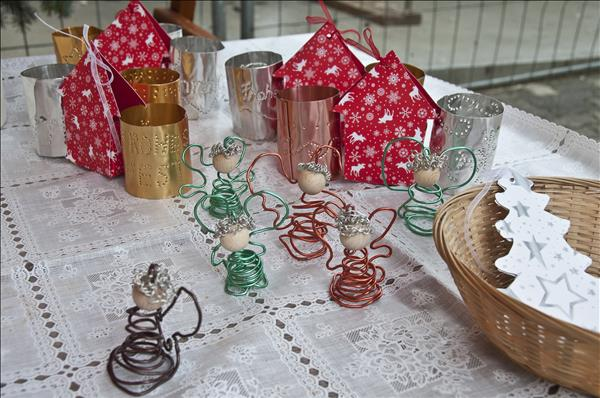
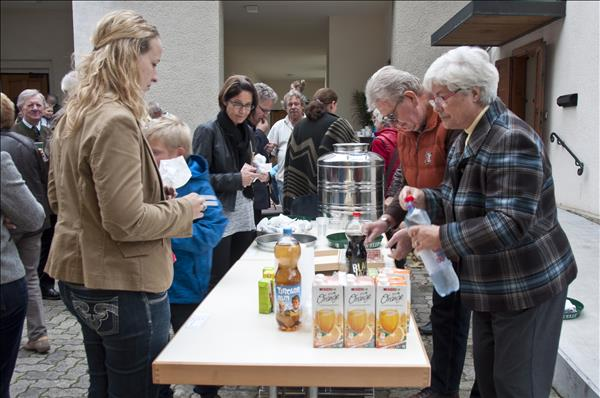
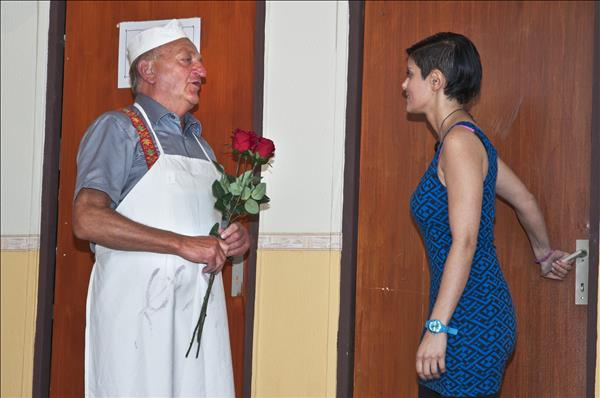
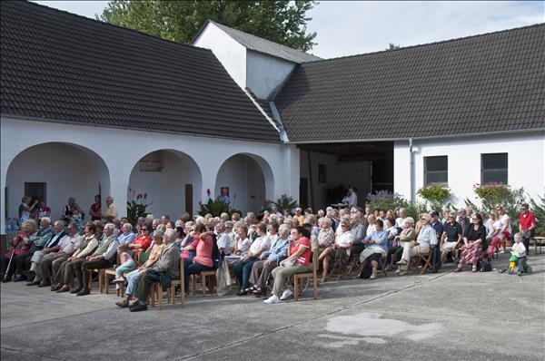
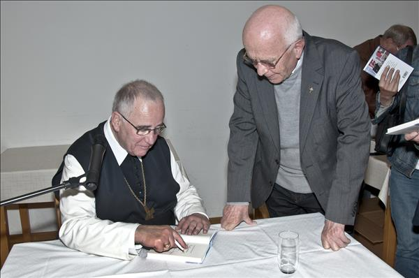

Die Bauarbeiten für das neue Pfarr-Zentr[a]um laufen auf Hochtouren.
Im ersten Schritt wurde der Pfarrhof thermisch und technisch auf den aktuellen
Stand der Technik gebracht. Künftig wird er Gruppenräume und Büros beherbergen.
Gleich daneben entsteht seit dem Sommer 2014 ein heller Multifunktionssaal.
Das neue Pfarr-Zentr(a)um wird Kirche und Pfarrheim noch näher zusammenrücken.
Schon jetzt herzlichen Dank für die zahlreiche Mithilfe und Unterstützung.
Genaue Berichte über den aktuellen Baufortschritt finden sie im Pfarrbrief.
Rückblick auf einige Benefizveranstaltungen zu Gunsten des neuen Pfarrzentrums
Fastensuppenessen
Am Sonntag, 22. März 2015, gab es wieder eine Benefizveranstaltung für den neuen Pfarrsaal. Neun Suppenköchinnen brachten wohlschmeckende Suppen zur Verkostung: Pock Hanne Lauchcremesuppe, Schedai Anni Kokos-Curry-Suppe, Prochaska Hermine Fischsuppe, Brader Brigitte Radieschensuppe, Entenfellner Anna Rote-Linsen-Suppe, Egerer Luise Hühnersuppe mit Nudeln, Fuchs Ruth Käselauchsuppe, Neulinger Prisca Karotten-Ingwer-Suppe, König Irmgard Rindsuppe mit Frittaten.
Adventkonzert 2014

Alle Jahre wieder - der Weihnachtsmarkt 2014

Maroni und Sturm im Oktober 2014

Theater
Im Oktober 2014 fanden drei sehr gut besuchte Aufführungen der Theatergruppe Wagram im Pfarrsaal Statterdorf statt. Es wurde das Stück "Tratsch im Stiegenhaus" gespielt. Der Erlös kommt dem Bau des neuen Pfarrzentrums zugute. 
Benefizkonzert
Am 20. September 2014 fand ein Benefizkonzert der Blasmusik Kapelln im Arkadenhof der Fam. Weichhart zu Gunsten des neuen Pfarrzentrums statt.
Vermögenstipps
"Reich werden auf die gute Art - Vermögenstipps eines Geistlichen" Am 29. April 2014 las Altabt Henckel Donnersmarck zu Gunsten des neuen Pfarrzentrums aus seinem neuen Buch.